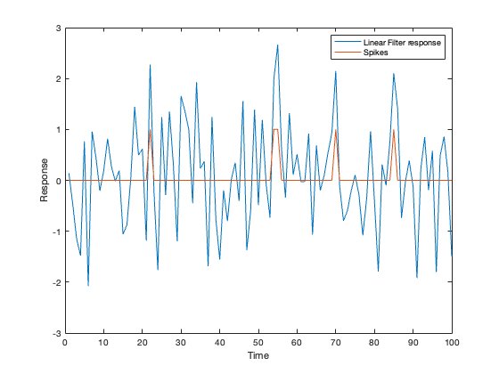
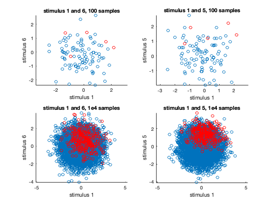
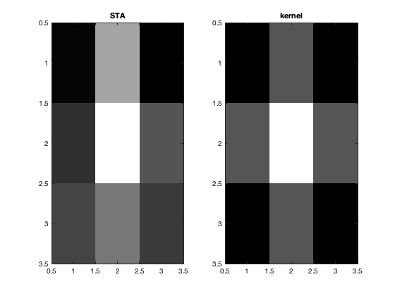
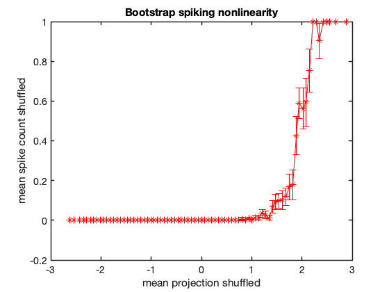

Contents
clear; close all; clc;
a)
The kernel is a weighting matrix that provides the weightage to different stimuli. The runGaussNoiseExpt then computes the stimuli and whether there were spikes across the duration specified by the variable duration. The linear-filter response can be obtained by multiplying the stimuli with the flattended-kernel (linear-filter). From the graph, we can see that the spikes seem to appear only when the stimuli are positive and above a certain threshold. However, there appears to be noise in the sense that presence of a positive stimulus does not necessarily imply a spike.
kernel_squared = [1 2 1; 2 4 2; 1 2 1]/6; % spatial kernel kernel = kernel_squared(:); % flattening the kernel duration = 100; % number of samples [spikes, stimuli] = runGaussNoiseExpt(kernel, duration); lin_filter_response = stimuli * kernel; figure() plot(lin_filter_response, 'DisplayName', 'Linear Filter response') hold on; plot(spikes, 'DisplayName', 'Spikes'); legend() xlabel('Time') ylabel('Response')
Projecting the stimuli and the stimuli corresponding to the spikes, we would expect the spikes to occur only when the stimuli are positive. Also, the weightage for each stimulus is determined by the kernel. For instance, the weightage given to stimulus 1 is 1/6, stimulus 5 is 4/6, to stimulus 6 is 2/6 and so on. Indeed this is what we can see from the projections. Here are few example plots that verify the same.
figure(); subplot(2, 2, 1) scatter(stimuli(:, 1), stimuli(:, 6)); hold on; scatter(stimuli(spikes, 1), stimuli(spikes, 6), 'r') xlabel('stimulus 1') ylabel('stimulus 6') title('stimulus 1 and 6, 100 samples') axis equal; subplot(2, 2, 2) scatter(stimuli(:, 1), stimuli(:, 5)); hold on; scatter(stimuli(spikes, 1), stimuli(spikes, 5), 'r') xlabel('stimulus 1') ylabel('stimulus 5') title('stimulus 1 and 5, 100 samples') axis equal; duration = 1e4; [spikes, stimuli] = runGaussNoiseExpt(kernel, duration); subplot(2, 2, 3) scatter(stimuli(:, 1), stimuli(:, 6)); hold on; scatter(stimuli(spikes, 1), stimuli(spikes, 6), 'r') xlabel('stimulus 1') ylabel('stimulus 6') title('stimulus 1 and 6, 1e4 samples') axis equal; subplot(2, 2, 4) scatter(stimuli(:, 1), stimuli(:, 5)); hold on; scatter(stimuli(spikes, 1), stimuli(spikes, 5), 'r') xlabel('stimulus 1') ylabel('stimulus 5') title('stimulus 1 and 5, 1e4 samples') axis equal;
b)
Spike-triggered average is a weighted-average of the scaled stimuli by the spikes. It can be computed using the formula:

where x is the scaled stimulus vector obtained by subtracting mean of the stimuli from each stimulus, and y is the spikes vector, n is the count of spikes.
duration = 100; % number of samples [spikes, stimuli] = runGaussNoiseExpt(kernel, duration); scaled_stimuli = stimuli - mean(stimuli); % scaling stimuli spike_count = sum(spikes); % count of spikes STA = (scaled_stimuli' * spikes)./spike_count; % spike-triggered average STA_normalized = STA./(sqrt(sum(STA.^2))); % normalizing STA STA_squared = reshape(STA_normalized, [3, 3]); % reshaping normalized STA into a square matrix
Plotting the normalized STA and kernel as grayscale images, we can see that they are similar to each other. The minor differences between the kernel and STA can be accounted for the noise in the computation of spikes.
figure() subplot(1, 2, 1) imagesc(STA_squared) colormap(gray) title('STA') subplot(1, 2, 2) imagesc(kernel_squared) colormap(gray) title('kernel')
The difference between the kernel and STA can be computed using bias and variance. The estimation bias is the mean difference between the kernel and mean STA across multiple runs. Similarly, the estimation variance is given as the mean squared difference between the kernel and mean STA across runs. The estimation bias and estimation variance can be computed for a range of durations. In order to create a log-log plot, we have to make sure that the estimation bias is positive. Hence here absolute values of difference are taken. The values can become negative especially when the sample size is low where the kernel values can be higher than the mean STA across runs.
durations = [100, 400, 1600, 6400, 25600, 102400]; % range of durations runs = 100; % total number of runs STA_across_runs = zeros(length(durations), runs, length(kernel)); % initializing STAs for i = 1:length(durations) duration = durations(i); for run = 1:runs STA_across_runs(i, run, :) = get_STA(kernel, duration); % computing normalized STAs for each run and duration end end % Computing estimation bias mean_STA_across_runs = squeeze(mean(STA_across_runs, 2)); kernel_oned = ones(length(durations), 1) * kernel'; diff_kernel_STA = kernel_oned - mean_STA_across_runs; ave_diff_kernel = mean(abs(diff_kernel_STA), 2); % absolute difference is taken to ensure that log-values can be computed % Computing estimation varince squared_diff_kernel_STA = (kernel_oned - mean_STA_across_runs).^2; var_diff_kernel = mean(squared_diff_kernel_STA, 2); figure() h = loglog(durations, ave_diff_kernel, 'bo-', durations, ... sqrt(var_diff_kernel), 'ro-'); xlabel('Duration') set(h(1), 'LineWidth', 2) set(h(2), 'LineWidth', 2) set(gca, 'LineWidth', 1.5) set(gca, 'FontSize', 14) legend('bias', 'sqrt(variance)')
From the plot we see that both estimation bias and variance decrease monotonically as a function of duration. Therefore, we can see that with an increase in the sample size, the effect of noise is reduced. Hence, for higher sample sizes, the normalized STA is a good estimate of the kernel with both low bias and low variance.
c)
Computing STA-normalized for a duration of 6400:
duration = 6400; [spikes, stimuli] = runGaussNoiseExpt(kernel, duration); scaled_stimuli = stimuli - mean(stimuli); spike_count = sum(spikes); if spike_count <= 0.01 STA_normalized = 0; else STA = (scaled_stimuli' * spikes)./(spike_count); STA_normalized = STA./(sqrt(sum(STA.^2))); end
In order to compute the non-linearity index, first we project the stimuli onto the normalized STA. The projected stimuli are then reordered in a descending order. The indices are then used to reorder the spikes. Then both the reordered projected stimuli and reordered spikes are binned into 32 equally spaced bins. For each bin, mean is computed. The graph of these means is the non-linearity index. We can see that indeed there is non-linearity in the spikes as a function of projected stimuli. Specifically, we can see that the spikes are 0 for the case where projected stimuli are less than 1. Only after the projected stimuli are greater than 1, does a spike occur. After this, there still appears some non-linearity and the number of spikes appear to grow exponentially with the projected-stimuli.
stimuli_projection = stimuli * STA_normalized; % stimuli projection onto STA [stimuli_projection_sorted, proj_index] = sort(stimuli_projection, 'descend'); % sorted projected stimuli spike_reordered = spikes(proj_index); % sorting spikes bin_width = 200; bin_size = 1:bin_width:duration; % bin edges stimuli_projection_mean = zeros(length(bin_size)); spike_reordered_mean = zeros(length(bin_size)); for bin_ = 1:length(bin_size) bin_lb = bin_size(bin_); % lower-bound of bin bin_ub = bin_width * bin_; % upper-bound of bin stimuli_projection_mean(bin_) = mean(stimuli_projection_sorted(bin_lb: bin_ub), 1); % computing mean projection stimuli for each bin spike_reordered_mean(bin_) = mean(spike_reordered(bin_lb: bin_ub), 1); % computing mean count of spikes for each bin end figure() plot(stimuli_projection_mean, spike_reordered_mean, 'r*-', 'LineWidth', 2) set(gca, 'LineWidth', 1.5) set(gca, 'FontSize', 14) xlabel('mean projection') ylabel('mean spike count') title('Spiking nonlinearity')

d)
Repeating the computation of nonlinearity with bootstrapping, first we fix the bins so that the results are comparable across the samples. Then we resample with replacement and bin the data into the pre-defined bins. And recompute the nonlinearity. Doing so, we see that indeed the nonlinearity is preserved and appears to saturate.
bootstrap_times = 100; numBins = 120; % computing edges of fixed bins for bootstrapping stimuli_proj_min = floor(min(stimuli_projection_sorted)); stimuli_proj_max = ceil(max(stimuli_projection_sorted)); bins = linspace(stimuli_proj_min, stimuli_proj_max, numBins); stimuli_projection_shuffled_mean = zeros(numBins, bootstrap_times); spike_reordered_shuffled_mean = zeros(numBins, bootstrap_times); for i = 1:bootstrap_times % shuffling indices and using these to shuffle projected stimuli and % spikes new_indices = randi(duration, 1, duration); stimuli_projection_shuffled = stimuli_projection(new_indices); spike_reordered_shuffled = spikes(new_indices); % binning the shuffled projected stimuli into 32 bins dicret_binned_idx = discretize(stimuli_projection_shuffled, bins); % computing mean of projected stimuli and spikes for kk = 1:numBins stimuli_projection_shuffled_binned = stimuli_projection_shuffled(dicret_binned_idx == kk); stimuli_projection_shuffled_mean(kk, i) = mean(stimuli_projection_shuffled_binned, 1); spike_reordered_shuffled_binned = spike_reordered_shuffled(dicret_binned_idx == kk); spike_reordered_shuffled_mean(kk, i) = mean(spike_reordered_shuffled_binned, 1); end end stimuli_projection_shuffled_bootstrap_mean = mean(stimuli_projection_shuffled_mean, 2); stimuli_projection_shuffled_bootstrap_stdev = std(stimuli_projection_shuffled_mean, 0, 2); spike_reordered_shuffled_bootstrap_mean = mean(spike_reordered_shuffled_mean, 2); spike_reordered_shuffled_bootstrap_stdev = std(spike_reordered_shuffled_mean, 0, 2); figure() errorbar(stimuli_projection_shuffled_bootstrap_mean, ... spike_reordered_shuffled_bootstrap_mean, ... spike_reordered_shuffled_bootstrap_stdev, 'r*-', 'LineWidth', 1) set(gca, 'LineWidth', 1.5) set(gca, 'FontSize', 14) xlabel('mean projection shuffled') ylabel('mean spike count shuffled') title('Bootstrap spiking nonlinearity')
Functions
function STA_normalized = get_STA(kernel, duration) % The function computes normalized STA using the same procedure as in % (a) given a kernel and duration. First it runs the runGaussNoiseExpt % to compute the spikes and stimuli. It then scales the stimuli by its % mean. Next it computes the STA by computing a dot-product between the % scaled stimuli and spikes and taking an average of the product. The % STA is then normalized. The function also takes into account the % scenarios where runGaussNoiseExpt can end up creating 0 spikes. In % this case, the STA is not defined. The function approximates such % scenarios as having 0 STA. [spikes, stimuli] = runGaussNoiseExpt(kernel, duration); scaled_stimuli = stimuli - mean(stimuli); spike_count = sum(spikes); if spike_count <= 0.01 STA_normalized = 0; else STA = (scaled_stimuli' * spikes)./(spike_count); STA_normalized = STA./(sqrt(sum(STA.^2))); end end